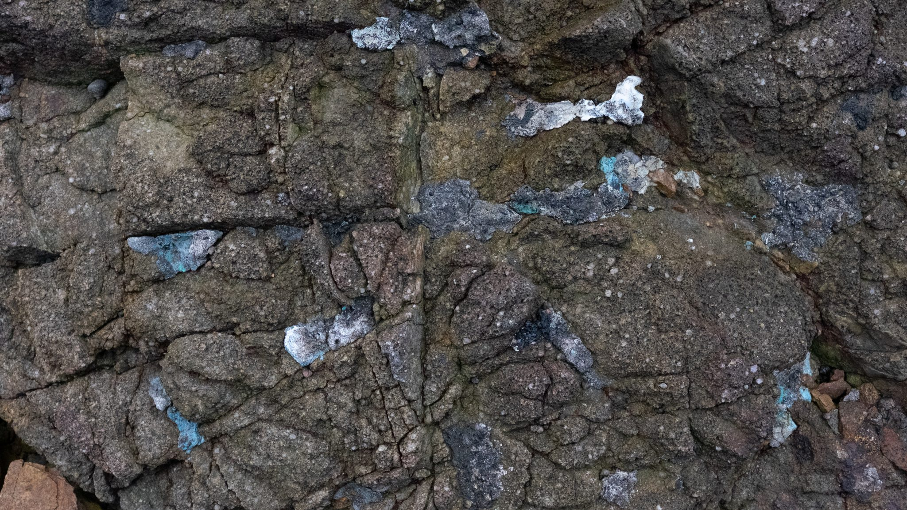
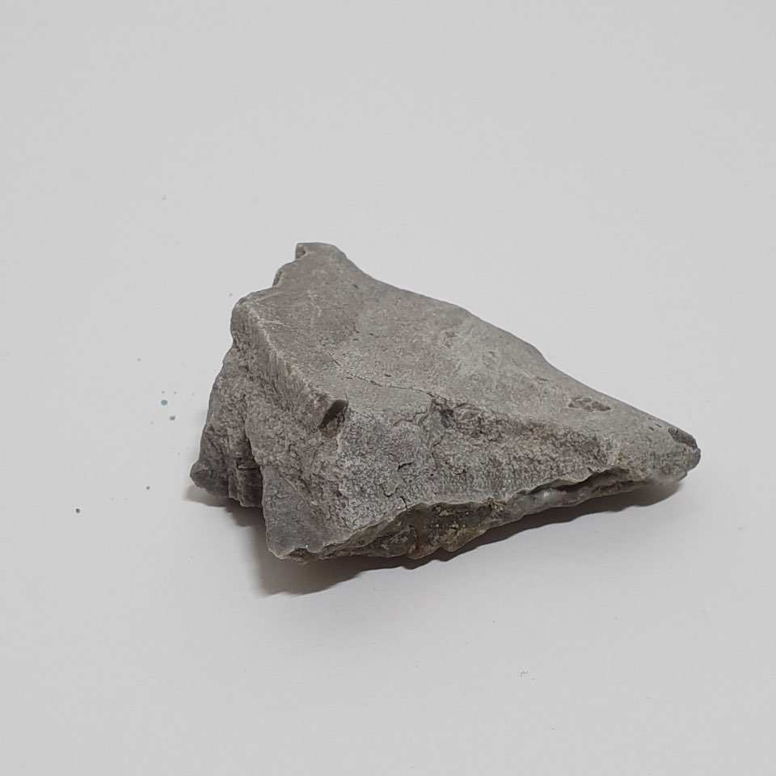
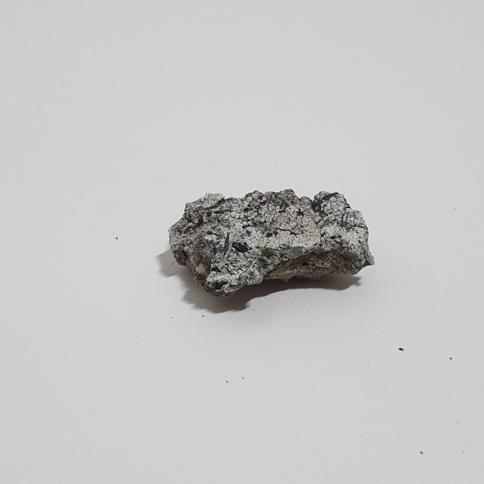
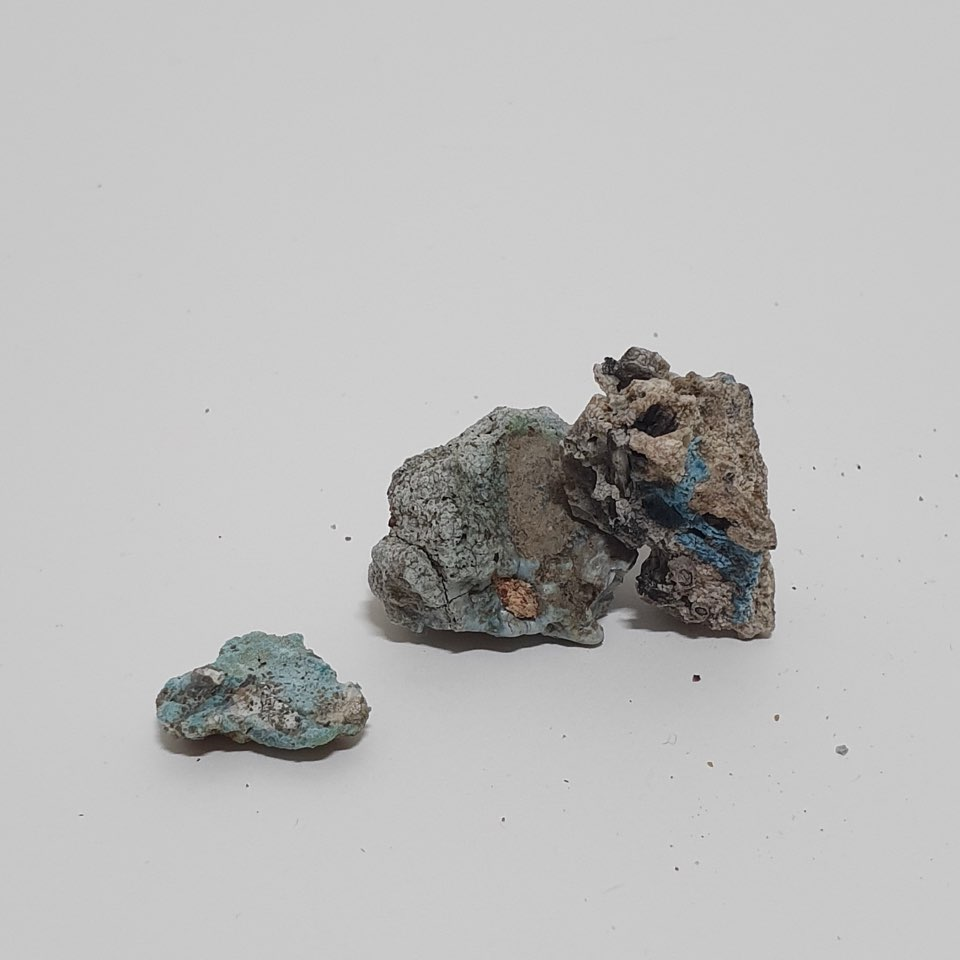
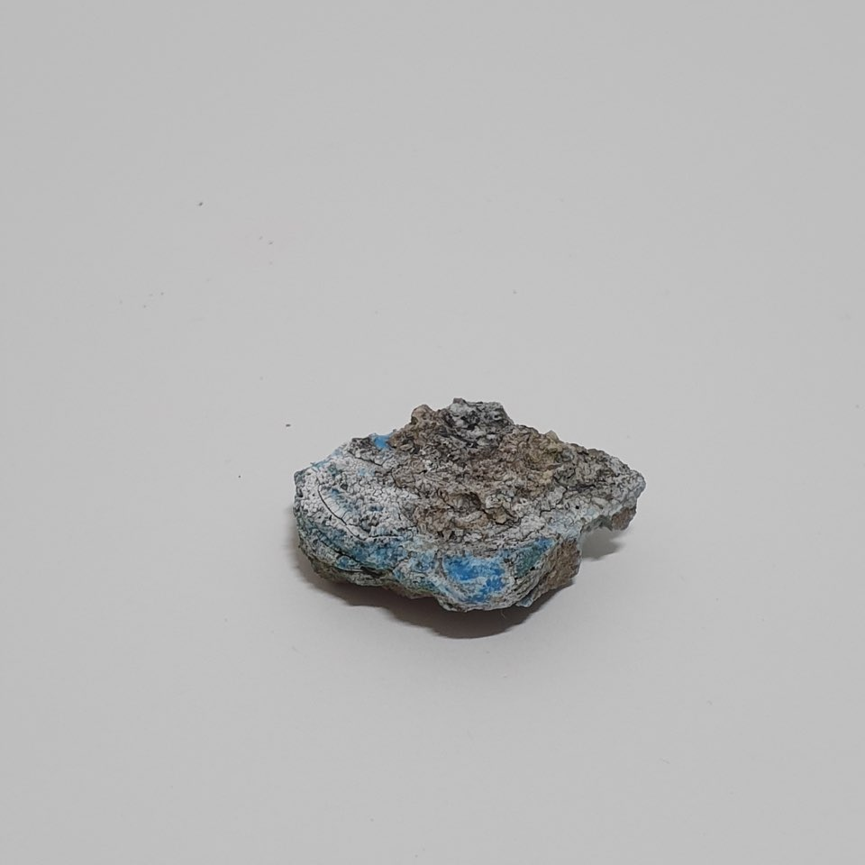

It was 7:30am in December 2007 when the disaster occurred. A crane barge docked on a tug would snap
and hit the Hebei Spirit, a crude carrier that carried over 260,000 tonnes of crude oil, near the
port of Dasean on the Yellow Sea coast of Taean County, South Korea.
As over 10,000 tonnes of crude oil shot out from the punctured tanks onto the shores of
Mallipo Beach in Taean County, this ecological disaster would later be considered the worst Oil
Spill in South Korean history. By 2014 however, the subsequent cleanup dubbed the Miracle of Taean
would be monumentalized as an instance of national pride as over one million volunteers would show
up to Mallipo’s shores within the first month to clean up the oil in the area. From police and
government workers from different districts, to stay at home moms and students bringing buckets and
rags from home. It would take the unity of a whole nation to restore the beach to the state that it
once was, averting any further ecological consequences.

Today, Mallipo Beach is a popular surf spot for locals and visitors. No longer covered in tar, it is
said that most of the wildlife has come back and conservation efforts have restored the beach to
what it once was. However another disaster exists around the beaches of Mallipo. One of unintended
human consequences, and one that remains invisible to most. If the oil spill in 2007 was the type of
disaster conjured through seconds of chaos, this other disaster is one that has been building
slowly, unfolding unceremoniously, but no less alarming than the former.
This slow disaster is about the petrochemicals that exist in the ocean that we are all too
familiar with – plastics. With an incalculable amount of plastics in the ocean, Mallipo beaches
receive the most trash from the ocean in South Korea. As plastics and microplastics hit the shores
of the Mallipo these pieces of poly- propylene, ethylene, urethane morph from the heat of the sun
and rocks eventually looking like the very rocks that inhabit the shores- blending in with nature so
naturally that it becomes indistinguishable from the rest of its environment. Geologists,
recognizing the inclusion of plastics into the geological cycle, have decided to start naming these
objects as pyroplastics and plastiglomerates in hopes that the scale of such disasters will be
recognized by the greater community. A vessel idolized as the democratization of consumer goods now
being studied as future composites of geology.
-

-

-

-

Today, Mallipo Beach is a popular surf spot for locals and visitors. No longer covered in tar, it is
said that most of the wildlife has come back and conservation efforts have restored the beach to
what it once was. However another disaster exists around the beaches of Mallipo. One of unintended
human consequences, and one that remains invisible to most. If the oil spill in 2007 was the type of
disaster conjured through seconds of chaos, this other disaster is one that has been building
slowly, unfolding unceremoniously, but no less alarming than the former.
This slow disaster is about the petrochemicals that exist in the ocean that we are all too familiar
with – plastics. With an incalculable amount of plastics in the ocean, Mallipo beaches receive the
most trash from the ocean in South Korea. As plastics and microplastics hit the shores of the
Mallipo these pieces of poly- propylene, ethylene, urethane morph from the heat of the sun and rocks
eventually looking like the very rocks that inhabit the shores- blending in with nature so naturally
that it becomes indistinguishable from the rest of its environment. Geologists, recognizing the
inclusion of plastics into the geological cycle, have decided to start naming these objects as
pyroplastics and plastiglomerates in hopes that the scale of such disasters will be recognized by
the greater community. A vessel idolized as the democratization of consumer goods now being studied
as future composites of geology.
As long as these new species of rocks, plastics, are here to stay, how do we begin to define these
objects of slow disaster? Are they the products of our material culture? Or are they merely
materials adopted and sculpted by nature? It is telling of our language of understanding that such
prescriptions of nature vs culture exist in the first place. And perhaps if these objects of
disaster have any say, it is too late to go back.
Culture provides us evidence that we are the masters of our own universe, while nature
shows us that nothing rules besides chaotic and random chance, in a turn of great irony it is the
mascot of our material culture that has kowtow to nature's whims, becoming part of nature itself.